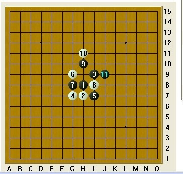
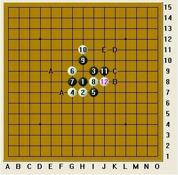
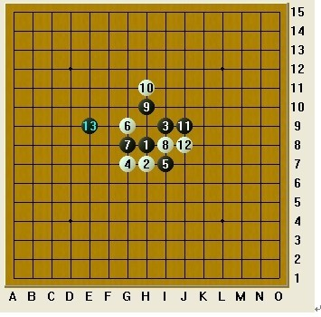

一盘斜月的冥思--
#1 一盘斜月的冥思-- 作者：陌雨菡 发表时间：2012-4-13 17:06:38
丘月开局， 4 通斜月，对手选择了二打点，黑 5 从前都认为是平衡点，现在说是黑大优的点，白 6 也正是唯一体现出“序盘抢二处处反先”战术， 7 手黑选择了次强点，斜月老定走法，大有缠斗趋向，白棋 8 手也是唯一防， 9 手继续做棋，白棋 10 手以控制为主，压缩黑的发展空间， 11 手黑棋限制中发展，稳妥的一手。
图一
12 还原 10=12 变化，黑 13 选择从左边跳出来
图二
图三
从现在的棋型上看，黑白趋于平衡局面。
#2 Re:一盘斜月的冥思---◆._陌雨菡ゞ□ 作者：漁民 发表时间：2012-4-13 17:12:03
 看不到图
看不到图
#3 Re:一盘斜月的冥思---◆._陌雨菡ゞ□ 作者：茗弈宽容 发表时间：2012-4-13 17:14:02
哦，买疙瘩
#4 Re:一盘斜月的冥思-- 作者：自来水 发表时间：2012-4-13 19:51:18

#5 Re:陌雨菡【==一盘斜月的冥思--==】 作者：空恨社小仙 发表时间：2012-4-13 22:37:16
 当然了,我不是实战现算,而是看了好久才算出这个24的... ...
当然了,我不是实战现算,而是看了好久才算出这个24的... ... 终结冥思.rar
终结冥思.rar［此帖子已被 空恨社小仙 在 2012-4-13 22:38:51 编辑过］
［ 蹲街丶式寂寞 于 2012-4-13 22:39:02 时花20金币送鲜花一朵］
［ 陌雨菡 于 2012-4-16 10:44:41 时花20金币送鲜花一朵］
#6 Re:空恨社小仙【==Re:陌雨菡【==一盘斜月的冥思--==】==】 作者：空恨社小仙 发表时间：2012-4-13 22:48:15
［ 自来水 于 2012-4-13 23:16:31 时花20金币送鲜花一朵］
［ 蹲街丶式寂寞 于 2012-4-14 6:01:37 时花20金币送鲜花一朵］
［ 茗弈宽容 于 2012-4-16 9:06:04 时奖励此帖[金币加 100 威望加1］
［ 陌雨菡 于 2012-4-16 10:44:17 时花20金币送鲜花一朵］
#7 Re:一盘斜月的冥思-- 作者：陌雨菡 发表时间：2012-4-16 10:43:45
哦，买疙瘩， 太强悍啦~~